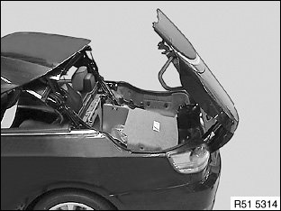
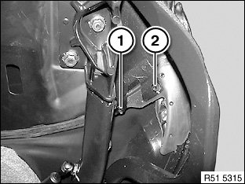
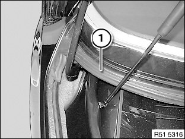

Convertible Top Weatherstrip: Service and Repair
54 37 028 Replacing Soft Top Compartment Lid Gasket

IMPORTANT: To prevent water ingress, removed gaskets may not be reused.

Open the rear module (see graphic).

Release sheet metal screw (1) and thin sheet metal screw (2) on left and right.
Installation note:
Make sure screws are installed in correct positions.

Completely retract retractable hardtop and open rear cover.
Pull off gasket (1) from left to right.
Installation note:
Do not stretch, kink, or crush gasket (1).
Coat gasket (1) with soapy water.
Perform installation from left to right (check bolting points).